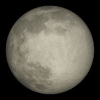

The Moon, otherwise known as Luna, is the only natural satellite of Earth. It was created 4.6 billion years ago, and it is widely accepted that it was created when Earth collided with a planet-sized object called Theia. It’s the fifth-largest moon in our solar system and is the second brightest object in the sky (after the Sun)
The Moon Profile
- orbit: 384,400 km from Earth
- diameter: 3476 km
- mass: 7.35e22 kg
History of The Moon
Called Luna by the Romans, Selene and Artemis by the Greeks, and many other names in other mythologies.
The Moon, of course, has been known since prehistoric times. It is the second brightest object in the sky after the Sun. As the Moon orbits around the Earth once per month, the angle between the Earth, the Moon and the Sun changes; we see this as the cycle of the Moon’s phases. The time between successive new moons is 29.5 days (709 hours), slightly different from the Moon’s orbital period (measured against the stars) since the Earth moves a significant distance in its orbit around the Sun in that time.

The Moon was first visited by the Soviet spacecraft Luna 2 in 1959. It is the only extraterrestrial body to have been visited by humans. The first landing was on July 20, 1969 (do you remember where you were?); the last was in December 1972. The Moon is also the only body from which samples have been returned to Earth. In the summer of 1994, the Moon was very extensively mapped by the little spacecraft Clementine and again in 1999 by Lunar Prospector.

The Moon’s crust averages 68 km thick and varies from essentially 0 under Mare Crisium to 107 km north of the crater Korolev on the lunar far side. Below the crust is a mantle and probably a small core (roughly 340 km radius and 2% of the Moon’s mass). Unlike the Earth, however, the Moon’s interior is no longer active. Curiously, the Moon’s center of mass is offset from its geometric center by about 2 km in the direction toward the Earth. Also, the crust is thinner on the near side.

There are two primary types of terrain on the Moon: the heavily cratered and very old highlands and the relatively smooth and younger maria. The maria (which comprise about 16% of the Moon’s surface) are huge impact craters that were later flooded by molten lava. Most of the surface is covered with regolith, a mixture of fine dust and rocky debris produced by meteor impacts. For some unknown reason, the maria are concentrated on the near side.

Most rocks on the surface of the Moon seem to be between 4.6 and 3 billion years old. This is a fortuitous match with the oldest terrestrial rocks which are rarely more than 3 billion years old. Thus the Moon provides evidence about the early history of the Solar System not available on the Earth.

Prior to the study of the Apollo samples, there was no consensus about the origin of the Moon. There were three principal theories: co-accretion which asserted that the Moon and the Earth formed at the same time from the Solar Nebula; fission which asserted that the Moon split off of the Earth; and capture which held that the Moon formed elsewhere and was subsequently captured by the Earth. None of these work very well. But the new and detailed information from the Moon rocks led to the impact theory: that the Earth collided with a very large object (as big as Mars or more) and that the Moon formed from the ejected material. There are still details to be worked out, but the impact theory is now widely accepted.

Picture of Moon
Quick Facts
| Surface Temperature: | -233 to 123 °C |
| Equatorial Circumference: | 10,917.0 km |
| Diameter: | 3,475 km |
| Mass: | 73,476,730,924,573,500 million kg (0.0123 x Earth) |